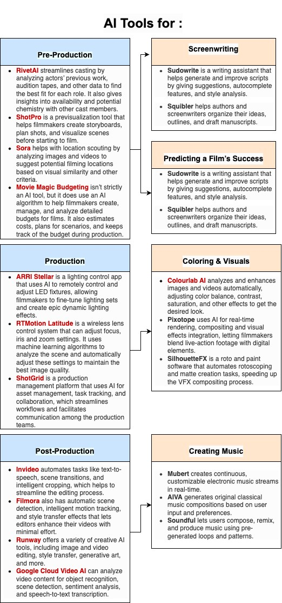

Resources
- AI Filmmaking Tools
- Largo: AI-powered analytics
- Runway
- Sora: text-to-video technology from OpenAI
- Filmmakers Academy
- Scriptwriting Demo Tool (requires Wall Street Journal subscription)
Free AI Apps
- ChatGPT: an AI text generator capable of responding to a variety of text-based prompts. Whether asking a simple question or typing out several paragraphs, ChatGPT utilizes the context within the request to produce an appropriate response.
- Starryai: an AI image generator capable of generating works of art based on the details of the description it is provided. One simply needs to provide a description of the work they would like to see and Starryai produces a number of pieces that match that request.
- Descript: an AI speech generator provides an instant audio and text transcription of the spoken word. It also allows that transcription to easily be edited to remove mistakes or filler words, creating a clean and professional final product, be that a video recording or a podcast.
- Audiobox: an AI model that generates voices and sound effects based on text and vocal prompts. Using a provided vocal sample or text description, Audiobox can create a sound file that matches the voice or effect requested.
